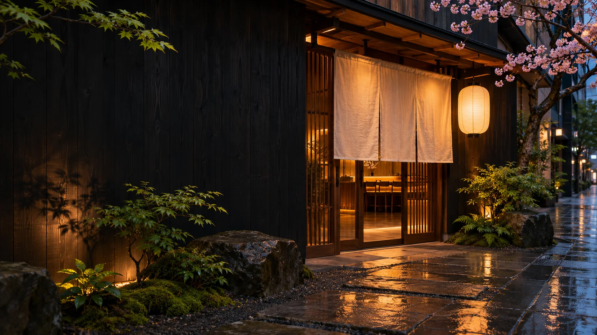
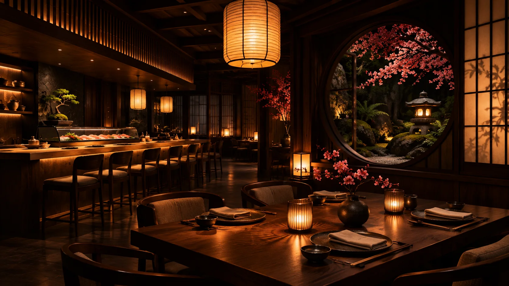

連絡先
TOKYO PREMIUM · УЧЕБНАЯ КОНЦЕПЦИЯ
Контакты
Всегда на связи
Свяжитесь с командой учебного проекта по вопросам меню, бронирования и формата вечера. Все контакты и сведения о месте вымышлены.
Учебная концепция · все бизнес-данные вымышленыНаши контакты
- Телефон · демо+7 (7172) 55-18-26Вымышленный номер учебного проекта
- Email · демоhello@tokyopremium.exampleАдрес на специальном домене .example
- Адрес · вымышленный
Астана, улица Сакура, 17 · квартал Ханами
Не используйте для навигации
Как нас найти
САКУРА-ДОРИПЕРЕУЛОК ХАНАМИ
Tokyo PremiumУчебная локация · вымышленный адрес
ХАНАМИ · условная станция
Учебная схема · не маршрут
Схема создана для оформления страницы. Она не показывает реальную географию и не поддерживает навигацию.


ご来店の前に · перед визитом
Спланируйте вечер заранее
Tokyo Premium — учебная концепция с вымышленным адресом. Здесь нет реального маршрута, подтверждённых сведений о парковке или доступности помещения.
Оставить учебную заявку ↗